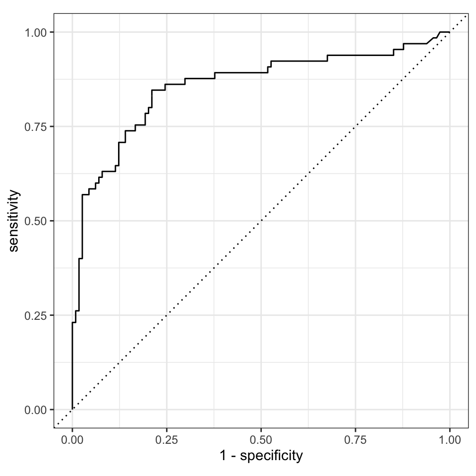

Chapter 12 Tidymodels og introduktion til maskin læring
library(tidymodels) # metapackage for ML FALSE ── Attaching packages ────────────────────────────────────── tidymodels 0.2.0 ──FALSE ✓ dials 0.1.1 ✓ rsample 0.1.1
FALSE ✓ infer 1.0.0 ✓ tune 0.2.0
FALSE ✓ modeldata 0.1.1 ✓ workflows 0.2.6
FALSE ✓ parsnip 0.2.1 ✓ workflowsets 0.2.1
FALSE ✓ recipes 0.2.0 ✓ yardstick 0.0.9FALSE ── Conflicts ───────────────────────────────────────── tidymodels_conflicts() ──
FALSE x gridExtra::combine() masks dplyr::combine()
FALSE x scales::discard() masks purrr::discard()
FALSE x dplyr::filter() masks stats::filter()
FALSE x recipes::fixed() masks stringr::fixed()
FALSE x dplyr::lag() masks stats::lag()
FALSE x dials::prune() masks dendextend::prune()
FALSE x yardstick::spec() masks readr::spec()
FALSE x recipes::step() masks stats::step()
FALSE • Search for functions across packages at https://www.tidymodels.org/find/library(tidyverse) # metapackage for data manipulation and visulaisation
library(ranger) #install this, random forest
library(palmerpenguins)
library(kernlab)FALSE
FALSE Vedhæfter pakke: 'kernlab'FALSE Det følgende objekt er maskeret fra 'package:scales':
FALSE
FALSE alphaFALSE Det følgende objekt er maskeret fra 'package:purrr':
FALSE
FALSE crossFALSE Det følgende objekt er maskeret fra 'package:ggplot2':
FALSE
FALSE alphalibrary(ISLR)12.1 Læringsmålene
- introducerer testing/training koncept
- bruger tidymodel workflow til at lave linær regression (parsnip)
- bruge samme workflow til at lave RF (tune parameter)
- tage RF og lave en AUC plot til at vurdere resultatet (yardstick)
12.2 Purpose of chapter
Not to be a comprehensive guide to machine learning
The idea is to introduce a new workflow which you can use for modelling.
The workflow is a framework which is easy to expand as you learn new modelling methodotholgies.
It may seem like overkill for linear regression but it works particularly well for machine learning set-ups, where we can cut out a lot of steps (which are done internally by the package)
12.4 Regression in the tidy model framework
Introduce the tidymodel framework with a very simple linear regression
#mt cars
set.seed(7834)
# Create a split object
mtcars_split <- initial_split(penguins %>% drop_na(), prop = 0.75)
# Build training data set
mtcars_training <- mtcars_split %>%
training()
# Build testing data set
mtcars_test <- mtcars_split %>%
testing()Make a recipe
mtcars_recipe <- recipe(body_mass_g ~ ., data = mtcars_training) %>%
step_YeoJohnson(all_numeric(), -all_outcomes()) %>%
step_normalize(all_numeric(), -all_outcomes()) %>%
step_dummy(all_nominal(), - all_outcomes())select a model
lm_model <- linear_reg() %>%
set_engine('lm') %>%
set_mode('regression')Make a workflow
mtcars_workflow <- workflow() %>%
add_model(lm_model) %>%
add_recipe(mtcars_recipe)Run
mtcars_fit <- mtcars_workflow %>%
last_fit(split = mtcars_split)How good is the fit?
mtcars_fit %>% collect_metrics()## # A tibble: 2 × 4
## .metric .estimator .estimate .config
## <chr> <chr> <dbl> <chr>
## 1 rmse standard 319. Preprocessor1_Model1
## 2 rsq standard 0.820 Preprocessor1_Model1# Obtain test set predictions data frame
mtcars_results <- mtcars_fit %>%
collect_predictions()
# View results
mtcars_results## # A tibble: 84 × 5
## id .pred .row body_mass_g .config
## <chr> <dbl> <int> <int> <chr>
## 1 train/test split 4085. 9 3800 Preprocessor1_Model1
## 2 train/test split 4104. 10 4400 Preprocessor1_Model1
## 3 train/test split 3658. 12 3450 Preprocessor1_Model1
## 4 train/test split 3295. 14 3325 Preprocessor1_Model1
## 5 train/test split 3816. 17 3600 Preprocessor1_Model1
## 6 train/test split 3622. 18 3800 Preprocessor1_Model1
## 7 train/test split 3951. 22 3550 Preprocessor1_Model1
## 8 train/test split 3622. 23 3200 Preprocessor1_Model1
## 9 train/test split 3928. 35 4650 Preprocessor1_Model1
## 10 train/test split 4129. 37 3900 Preprocessor1_Model1
## # … with 74 more rowsggplot(data = mtcars_results,
mapping = aes(x = .pred, y = body_mass_g)) +
geom_point(color = '#006EA1', alpha = 0.25) +
geom_abline(intercept = 0, slope = 1, color = 'orange') +
labs(title = 'Linear Regression Results',
x = 'Predicted mpg',
y = 'Actual mpg') + theme_bw()
12.5 Classification in the tidy model framework
Try fitting a random forest for classification
Can use the titanic dataset for this - to predict survival
Don’t go into details (and give disclaimer), but to give the framework
Make an AUC curve
12.5.1 Titanic survival
Let’s start with the famous Titanic dataset. We need to predict if a passenger survived the sinking of the Titanic (1) or not (0). A dataset is provided for training our models (train.csv). Another dataset is provided (test.csv) for which we do not know the answer. We will predict survival for each passenger, submit our answer to Kaggle and see how well we did compared to other folks. The metric for comparison is the percentage of passengers we correctly predict – aka as accuracy.
First things first, let’s load some packages to get us started.
library(titanic)
titanic_clean <- titanic_train %>% # we take the titanic dataset
select(-Cabin) %>% # select the bits we want
drop_na() # then remove the NAstitanic <- titanic_cleantitanic <- titanic %>% mutate(survived = as_factor(if_else(Survived == 1, "yes", "no"))) %>%
mutate(survived = relevel(survived, ref = "yes")) %>% # first event is survived = yes
mutate(class = case_when(Pclass == 1 ~ "first",
Pclass == 2 ~ "second",
Pclass == 3 ~ "third"),
class = as_factor(class),
gender = factor(Sex),
port = factor(Embarked),
age = Age,
fare = Fare,
alone = if_else(SibSp + Parch == 0, "yes", "no")) %>%
select(survived, class, gender, age, alone, port, fare) 12.5.2 Fit workflow on titanic data
set.seed(7834)
# Create a split object
mtcars_split <- initial_split(titanic, prop = 0.75)
# Build training data set
mtcars_training <- mtcars_split %>%
training()
# Build testing data set
mtcars_test <- mtcars_split %>%
testing()mtcars_recipe <- recipe(survived ~ ., data = mtcars_training) %>%
step_YeoJohnson(all_numeric(), -all_outcomes()) %>%
step_normalize(all_numeric(), -all_outcomes()) %>%
step_dummy(all_nominal(), - all_outcomes())- Let’s select a model
Her are two possible classification models, you can just use these interchangeably/pick one. Notice with the first there is an extra parameter. It is this step that has the largest difference according to which model you want to use.
my_model_RF <- rand_forest(trees = 100) %>%
set_engine("ranger") %>%
set_mode("classification")my_model_GLM <- logistic_reg() %>%
set_engine("glm") %>%
set_mode("classification")my_model_SVM <- svm_rbf() %>%
set_mode("classification") %>%
set_engine("kernlab")Beware that I just give the models without going into the details - they are just to show how you can classfy data with tidymodels. I suggest looking into glm and random forest a little more on your own before using it with your own data (but I don’t expect you to know details for this course).
Let’s run with both models, we can compare them later:
- Make a workflow
mtcars_workflow_RF <- workflow() %>%
add_model(my_model_RF) %>%
add_recipe(mtcars_recipe)
mtcars_workflow_GLM <- workflow() %>%
add_model(my_model_GLM) %>%
add_recipe(mtcars_recipe)
mtcars_workflow_SVM <- workflow() %>%
add_model(my_model_SVM) %>%
add_recipe(mtcars_recipe)Run
mtcars_fit_RF <- mtcars_workflow_RF %>%
last_fit(split = mtcars_split)
mtcars_fit_GLM <- mtcars_workflow_GLM %>%
last_fit(split = mtcars_split)
mtcars_fit_SVM <- mtcars_workflow_SVM %>%
last_fit(split = mtcars_split)12.6 How good is the fit?
mtcars_fit_RF %>% collect_metrics()## # A tibble: 2 × 4
## .metric .estimator .estimate .config
## <chr> <chr> <dbl> <chr>
## 1 accuracy binary 0.799 Preprocessor1_Model1
## 2 roc_auc binary 0.857 Preprocessor1_Model1mtcars_fit_GLM %>% collect_metrics()## # A tibble: 2 × 4
## .metric .estimator .estimate .config
## <chr> <chr> <dbl> <chr>
## 1 accuracy binary 0.760 Preprocessor1_Model1
## 2 roc_auc binary 0.857 Preprocessor1_Model1mtcars_fit_SVM %>% collect_metrics()## # A tibble: 2 × 4
## .metric .estimator .estimate .config
## <chr> <chr> <dbl> <chr>
## 1 accuracy binary 0.782 Preprocessor1_Model1
## 2 roc_auc binary 0.825 Preprocessor1_Model1# Obtain test set predictions data frame
mtcars_results <- mtcars_fit_RF %>%
collect_predictions()
# View results
mtcars_results## # A tibble: 179 × 7
## id .pred_yes .pred_no .row .pred_class survived .config
## <chr> <dbl> <dbl> <int> <fct> <fct> <chr>
## 1 train/test split 0.700 0.300 11 yes yes Preprocessor1…
## 2 train/test split 0.0756 0.924 19 no yes Preprocessor1…
## 3 train/test split 0.253 0.747 23 no yes Preprocessor1…
## 4 train/test split 0.510 0.490 24 yes no Preprocessor1…
## 5 train/test split 0.485 0.515 25 no no Preprocessor1…
## 6 train/test split 0.613 0.387 27 yes no Preprocessor1…
## 7 train/test split 0.134 0.866 29 no no Preprocessor1…
## 8 train/test split 0.124 0.876 38 no no Preprocessor1…
## 9 train/test split 0.936 0.0638 40 yes yes Preprocessor1…
## 10 train/test split 0.848 0.152 42 yes yes Preprocessor1…
## # … with 169 more rowsdagaa.roc = mtcars_results %>%
yardstick::roc_curve(survived,
.pred_yes) %>% autoplot()
dagaa.roc
#dagaa.roc %>% ggplot(aes(x=1-specificity,y=sensitivity)) + geom_point() + geom_abline(slope=1,intercept = 0,lty=2)12.7 Cross validation
#cross_val_tbl <- vfold_cv(train_tbl, v = 10)12.7.1 Khan data (maybe for workshop)
Khan_train <- bind_cols(
y = factor(Khan$ytrain),
as_tibble(Khan$xtrain)
)## Warning: The `x` argument of `as_tibble.matrix()` must have unique column names if `.name_repair` is omitted as of tibble 2.0.0.
## Using compatibility `.name_repair`.
## This warning is displayed once every 8 hours.
## Call `lifecycle::last_lifecycle_warnings()` to see where this warning was generated.Khan_test <- bind_cols(
y = factor(Khan$ytest),
as_tibble(Khan$xtest)
)mtcars_recipe <- recipe(y ~ ., data = Khan_train) %>%
step_YeoJohnson(all_numeric(), -all_outcomes()) %>%
step_normalize(all_numeric(), -all_outcomes()) %>%
step_dummy(all_nominal(), - all_outcomes())iris_ranger <- rand_forest(trees = 100) %>%
set_engine("ranger") %>%
set_mode("classification")mtcars_workflow <- workflow() %>%
add_model(iris_ranger) %>%
add_recipe(mtcars_recipe)mtcars_fit <- iris_ranger %>% fit(y ~ ., data=Khan_train)
mtcars_fit %>% augment(Khan_test) %>% conf_mat(truth = y, estimate = .pred_class)## Truth
## Prediction 1 2 3 4
## 1 3 0 0 0
## 2 0 6 0 0
## 3 0 0 5 0
## 4 0 0 1 5mtcars_fit %>% augment(Khan_train) %>% conf_mat(truth = y, estimate = .pred_class)## Truth
## Prediction 1 2 3 4
## 1 8 0 0 0
## 2 0 23 0 0
## 3 0 0 12 0
## 4 0 0 0 20